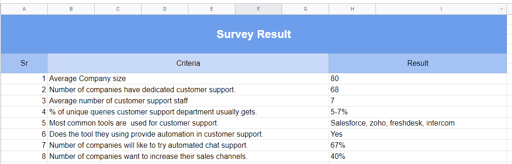

A user persona is a frictional representation of the actual user who is going to use your application.
It helps you to design your product in a better way so you could achieve your business goals with minimum efforts.
In the age of 22, I founded my first startup. It was a chatbot building platform Where any non-technical user without any knowledge of software and programming can build a chatbot and place it on their website.
I got the clients like an individual non-technical user to big corporates and MNC.
It was because of making good user persona's and targeting only the most potential prospects.
In this article, I am going to share how to design a user persona for your product or service.
By the end of this article, you'll be able to master this art.
Let's begin, step by step guide for user persona design.
Step One:
Whenever I had to explain about my startup to anyone, I had a single line statement, "It is a chatbot building platform, where any non-technical user can build a chatbot for their website or organisation".
This statement was explaining my user's persona clearly that they are not-highly tech-savvy or an expert.
Let's dig deep down in it.
Who could be a non-technical person?
A person who does not belongs to the field of computer science and don't know more about computer programing.
A person who is already running a small business or providing a professional service to his clients?
Anyone who is owning a small bakery shop in the town or a certified professional accountant having lots of clients.
Based on the above clarity, I moved forward to the next step.
Step Two:
Once your goal is clear for whom you are building your product or application, you should move to this step.
Start to design a survey for your target audience.
Make sure your survey contains open-ended questions rather than yes or no questions.
Make sure it's not very long and not very short. I suggest minimum 5-6 questions should be there and maximum 10-12.
Once you finish writing survey, make sure to distribute it to maximum numbers of people you can and if possible, collect their feedback personally.
for example: In my case, once my goal was clear, then I started to design a survey with the following questions.
And few more questions like this.
Once I finished writing my survey, I used google forms and Typeform to distribute it. I made sure I share it to the people I know personally and ask them to take participate in it. Once this step has done, and you have your survey data, move forward to the next step.
Step Three:
In this step, try to drive useful and actionable information from collected data and based on different point categories and sort it.
For example: in my case (A chatbot building platform), I sorted my data in the following way and drove the following information from it.
From all the participants of the survey, the average number of company size was 80. Only 40% of them had a dedicated customer support team. The average number of people in customer support was 7. They were using Facebook messenger, email, Freshdesk and other CRM for customer support. Only 3% of them had an automatic support system. 67% of them were interested in automating customer support. 40% of them was interested in trying chatbots.
The total number of the participant in my survey was 170.
Now based, on this data, I arranged the data in term of user persona. Let's see it in the next step.
Step Four:
Let's assume if you sent your survey to four types of different people, Businessman, ShopOwner, Freelancer, a College student.
So based on these four different categories create four different user persona's and add a mixture of characteristics to them driven from the same class.
for example: In my case (A chatbot building platform), I sent my survey to four categories of people.
And based on this data, I designed the four different User personas.
Step Five:
Once your user personas are ready, start to take actions on it. Share with your team and discuss the pros and cons of working over a specific user persona.
Some users could give you high shares in your revenue, and some could less, it is possible, small business and individual professionals deal with you early in your starting days, and big corporates and MNC deal with you later after you create enough credibility in the market.
For example: In my case (A chatbot building platform), I started to focus on small business and entrepreneurs, who want to capture maximum leads in their startups. I tried to understand their working condition and their feasibility, I connected them in my product building journey and was keeping them updated with the latest development progress. They were providing me with good feedback and became my first buyers once my product was ready.
Bonus Tips:
Only the changes are constant. Users keep evolving themself and therefore, your application or product to have to. Make sure to update your user persona's every six months or every year and keep improving it.
User personas could be subjective to people whom you select for the survey. So make sure to include people from different diversities.
For example, Big tech always designs the product keeping differently-abled people in their mind, they make sure people with one hand can use it, people who are colour blind could also use it, people who are unable to read also could use it. They make sure if differently-abled people could use it so sult, anyone will be able to use their product or application.
There are lots of persona design tools available on the internet. You can use any of those. It will help you to represent your user persona visually. https://xtensio.com/?fpr=personadesign is one of those.
The more you experiment with persona's your applications UX will improve. Try a different type of age groups, try multiple genders, try differently-abled peoples.
Summary:
A user persona is an essential part of your application or product design. It helps you to build your application's user experience smoothly. Persona design is a step by step process. According to your feasibility and requirements, you can add more steps like one on one interview in it. Persona design is a continues process.
Thank you for reading, if you have any question or need help, you can ask me in the comment section.
Thank you
Bharat